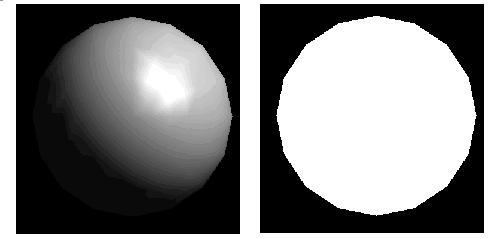

Chapter 5
Lighting
Chapter Objectives
After reading this chapter, you'll be able to do the following:
- Understand how real-world lighting conditions are approximated by OpenGL
- Render illuminated objects by defining the desired light sources and lighting model
- Define the material properties of the objects being illuminated
- Manipulate the matrix stack to control the position of light sources
As you saw in Chapter 4, OpenGL computes the color of each pixel in a final, displayed scene that's held in the framebuffer. Part of this computation depends on what lighting is used in the scene and on how objects in the scene reflect or absorb that light. As an example of this, recall that the ocean has a different color on a bright, sunny day than it does on a gray, cloudy day. The presence of sunlight or clouds determines whether you see the ocean as bright turquoise or murky gray-green. In fact, most objects don't even look three-dimensional until they're lit. Figure 5-1 shows two versions of the exact same scene (a single sphere), one with lighting and one without.

Figure 5-1 : A Lit and an Unlit Sphere
As you can see, an unlit sphere looks no different from a two-dimensional disk. This demonstrates how critical the interaction between objects and light is in creating a three-dimensional scene.
With OpenGL, you can manipulate the lighting and objects in a scene to create many different kinds of effects. This chapter begins with a primer on hidden-surface removal. Then it explains how to control the lighting in a scene, discusses the OpenGL conceptual model of lighting, and describes in detail how to set the numerous illumination parameters to achieve certain effects. Toward the end of the chapter, the mathematical computations that determine how lighting affects color are presented.
This chapter contains the following major sections:
A Hidden-Surface Removal Survival Kit
With this section, you begin to draw shaded, three-dimensional objects, in earnest. With shaded polygons, it becomes very important to draw the objects that are closer to our viewing position and to eliminate objects obscured by others nearer to the eye.
When you draw a scene composed of three-dimensional objects, some of them might obscure all or parts of others. Changing your viewpoint can change the obscuring relationship. For example, if you view the scene from the opposite direction, any object that was previously in front of another is now behind it. To draw a realistic scene, these obscuring relationships must be maintained. Suppose your code works like this:
while (1) {
get_viewing_point_from_mouse_position();
glClear(GL_COLOR_BUFFER_BIT);
draw_3d_object_A();
draw_3d_object_B();
}
For some mouse positions, object A might obscure object B. For others, the reverse may hold. If nothing special is done, the preceding code always draws object B second (and thus on top of object A) no matter what viewing position is selected. In a worst case scenario, if objects A and B intersect one another so that part of object A obscures object B and part of B obscures A, changing the drawing order does not provide a solution.
The elimination of parts of solid objects that are obscured by others is called hidden-surface removal. (Hidden-line removal, which does the same job for objects represented as wireframe skeletons, is a bit trickier and isn't discussed here. See "Hidden-Line Removal" in Chapter 14 for details.) The easiest way to achieve hidden-surface removal is to use the depth buffer (sometimes called a z-buffer). (Also see Chapter 10.)
A depth buffer works by associating a depth, or distance, from the view plane (usually the near clipping plane), with each pixel on the window. Initially, the depth values for all pixels are set to the largest possible distance (usually the far clipping plane) using the glClear() command with GL_DEPTH_BUFFER_BIT. Then the objects in the scene are drawn in any order.
Graphical calculations in hardware or software convert each surface that's drawn to a set of pixels on the window where the surface will appear if it isn't obscured by something else. In addition, the distance from the view plane is computed. With depth buffering enabled, before each pixel is drawn a comparison is done with the depth value already stored at the pixel. If the new pixel is closer than (in front of) what's there, the new pixel's color and depth values replace those that are currently written into the pixel. If the new pixel's depth is greater than what's currently there, the new pixel is obscured, and the color and depth information for the incoming pixel is discarded.
To use depth buffering, you need to enable depth buffering. This has to be done only once. Before drawing, each time you draw the scene, you need to clear the depth buffer and then draw the objects in the scene in any order.
To convert the preceding code example so that it performs hidden-surface removal, modify it to the following:
glutInitDisplayMode (GLUT_DEPTH | .... );
glEnable(GL_DEPTH_TEST);
...
while (1) {
glClear(GL_COLOR_BUFFER_BIT | GL_DEPTH_BUFFER_BIT);
get_viewing_point_from_mouse_position();
draw_3d_object_A();
draw_3d_object_B();
}
The argument to glClear() clears both the depth and color buffers.
Depth-buffer testing can affect the performance of your application. Since information is discarded rather than used for drawing, hidden-surface removal can increase your performance slightly. However, the implementation of your depth buffer probably has the greatest effect on performance. A "software" depth buffer (implemented with processor memory) may be much slower than one implemented with a specialized hardware depth buffer.
Real-World and OpenGL Lighting
When you look at a physical surface, your eye's perception of the color depends on the distribution of photon energies that arrive and trigger your cone cells. (See "Color Perception" in Chapter 4.) Those photons come from a light source or combination of sources, some of which are absorbed and some of which are reflected by the surface. In addition, different surfaces may have very different properties - some are shiny and preferentially reflect light in certain directions, while others scatter incoming light equally in all directions. Most surfaces are somewhere in between.
OpenGL approximates light and lighting as if light can be broken into red, green, and blue components. Thus, the color of light sources is characterized by the amount of red, green, and blue light they emit, and the material of surfaces is characterized by the percentage of the incoming red, green, and blue components that is reflected in various directions. The OpenGL lighting equations are just an approximation but one that works fairly well and can be computed relatively quickly. If you desire a more accurate (or just different) lighting model, you have to do your own calculations in software. Such software can be enormously complex, as a few hours of reading any optics textbook should convince you.
In the OpenGL lighting model, the light in a scene comes from several light sources that can be individually turned on and off. Some light comes from a particular direction or position, and some light is generally scattered about the scene. For example, when you turn on a light bulb in a room, most of the light comes from the bulb, but some light comes after bouncing off one, two, three, or more walls. This bounced light (called ambient) is assumed to be so scattered that there is no way to tell its original direction, but it disappears if a particular light source is turned off.
Finally, there might be a general ambient light in the scene that comes from no particular source, as if it had been scattered so many times that its original source is impossible to determine.
In the OpenGL model, the light sources have an effect only when there are surfaces that absorb and reflect light. Each surface is assumed to be composed of a material with various properties. A material might emit its own light (like headlights on an automobile), it might scatter some incoming light in all directions, and it might reflect some portion of the incoming light in a preferential direction like a mirror or other shiny surface.
The OpenGL lighting model considers the lighting to be divided into four independent components: emissive, ambient, diffuse, and specular. All four components are computed independently and then added together.
Ambient, Diffuse, and Specular Light
Ambient illumination is light that's been scattered so much by the environment that its direction is impossible to determine - it seems to come from all directions. Backlighting in a room has a large ambient component, since most of the light that reaches your eye has first bounced off many surfaces. A spotlight outdoors has a tiny ambient component; most of the light travels in the same direction, and since you're outdoors, very little of the light reaches your eye after bouncing off other objects. When ambient light strikes a surface, it's scattered equally in all directions.
The diffuse component is the light that comes from one direction, so it's brighter if it comes squarely down on a surface than if it barely glances off the surface. Once it hits a surface, however, it's scattered equally in all directions, so it appears equally bright, no matter where the eye is located. Any light coming from a particular position or direction probably has a diffuse component.
Finally, specular light comes from a particular direction, and it tends to bounce off the surface in a preferred direction. A well-collimated laser beam bouncing off a high-quality mirror produces almost 100 percent specular reflection. Shiny metal or plastic has a high specular component, and chalk or carpet has almost none. You can think of specularity as shininess.
Although a light source delivers a single distribution of frequencies, the ambient, diffuse, and specular components might be different. For example, if you have a white light in a room with red walls, the scattered light tends to be red, although the light directly striking objects is white. OpenGL allows you to set the red, green, and blue values for each component of light independently.
Material Colors
The OpenGL lighting model makes the approximation that a material's color depends on the percentages of the incoming red, green, and blue light it reflects. For example, a perfectly red ball reflects all the incoming red light and absorbs all the green and blue light that strikes it. If you view such a ball in white light (composed of equal amounts of red, green, and blue light), all the red is reflected, and you see a red ball. If the ball is viewed in pure red light, it also appears to be red. If, however, the red ball is viewed in pure green light, it appears black (all the green is absorbed, and there's no incoming red, so no light is reflected).
Like lights, materials have different ambient, diffuse, and specular colors, which determine the ambient, diffuse, and specular reflectances of the material. A material's ambient reflectance is combined with the ambient component of each incoming light source, the diffuse reflectance with the light's diffuse component, and similarly for the specular reflectance and component. Ambient and diffuse reflectances define the color of the material and are typically similar if not identical. Specular reflectance is usually white or gray, so that specular highlights end up being the color of the light source's specular intensity. If you think of a white light shining on a shiny red plastic sphere, most of the sphere appears red, but the shiny highlight is white.
In addition to ambient, diffuse, and specular colors, materials have an emissive color, which simulates light originating from an object. In the OpenGL lighting model, the emissive color of a surface adds intensity to the object, but is unaffected by any light sources. Also, the emissive color does not introduce any additional light into the overall scene.
RGB Values for Lights and Materials
The color components specified for lights mean something different than for materials. For a light, the numbers correspond to a percentage of full intensity for each color. If the R, G, and B values for a light's color are all 1.0, the light is the brightest possible white. If the values are 0.5, the color is still white, but only at half intensity, so it appears gray. If R=G=1 and B=0 (full red and green with no blue), the light appears yellow.
For materials, the numbers correspond to the reflected proportions of those colors. So if R=1, G=0.5, and B=0 for a material, that material reflects all the incoming red light, half the incoming green, and none of the incoming blue light. In other words, if an OpenGL light has components (LR, LG, LB), and a material has corresponding components (MR, MG, MB), then, ignoring all other reflectivity effects, the light that arrives at the eye is given by (LR*MR, LG*MG, LB*MB).
Similarly, if you have two lights that send (R1, G1, B1) and (R2, G2, B2) to the eye, OpenGL adds the components, giving (R1+R2, G1+G2, B1+B2). If any of the sums are greater than 1 (corresponding to a color brighter than the equipment can display), the component is clamped to 1.
A Simple Example: Rendering a Lit Sphere
These are the steps required to add lighting to your scene.
Define normal vectors for each vertex of all the objects. These normals determine the orientation of the object relative to the light sources.
Create, select, and position one or more light sources.
Create and select a lighting model, which defines the level of global ambient light and the effective location of the viewpoint (for the purposes of lighting calculations).
Define material properties for the objects in the scene.
Example 5-1 accomplishes these tasks. It displays a sphere illuminated by a single light source, as shown earlier in Figure 5-1.
Example 5-1 : Drawing a Lit Sphere: light.c
#include <GL/gl.h>
#include <GL/glu.h>
#include <GL/glut.h>
void init(void)
{
GLfloat mat_specular[] = { 1.0, 1.0, 1.0, 1.0 };
GLfloat mat_shininess[] = { 50.0 };
GLfloat light_position[] = { 1.0, 1.0, 1.0, 0.0 };
glClearColor (0.0, 0.0, 0.0, 0.0);
glShadeModel (GL_SMOOTH);
glMaterialfv(GL_FRONT, GL_SPECULAR, mat_specular);
glMaterialfv(GL_FRONT, GL_SHININESS, mat_shininess);
glLightfv(GL_LIGHT0, GL_POSITION, light_position);
glEnable(GL_LIGHTING);
glEnable(GL_LIGHT0);
glEnable(GL_DEPTH_TEST);
}
void display(void)
{
glClear (GL_COLOR_BUFFER_BIT | GL_DEPTH_BUFFER_BIT);
glutSolidSphere (1.0, 20, 16);
glFlush ();
}
void reshape (int w, int h)
{
glViewport (0, 0, (GLsizei) w, (GLsizei) h);
glMatrixMode (GL_PROJECTION);
glLoadIdentity();
if (w <= h)
glOrtho (-1.5, 1.5, -1.5*(GLfloat)h/(GLfloat)w,
1.5*(GLfloat)h/(GLfloat)w, -10.0, 10.0);
else
glOrtho (-1.5*(GLfloat)w/(GLfloat)h,
1.5*(GLfloat)w/(GLfloat)h, -1.5, 1.5, -10.0, 10.0);
glMatrixMode(GL_MODELVIEW);
glLoadIdentity();
}
int main(int argc, char** argv)
{
glutInit(&argc, argv);
glutInitDisplayMode (GLUT_SINGLE | GLUT_RGB | GLUT_DEPTH);
glutInitWindowSize (500, 500);
glutInitWindowPosition (100, 100);
glutCreateWindow (argv[0]);
init ();
glutDisplayFunc(display);
glutReshapeFunc(reshape);
glutMainLoop();
return 0;
}
The lighting-related calls are in the init() command; they're discussed briefly in the following paragraphs and in more detail later in the chapter. One thing to note about Example 5-1 is that it uses RGBA color mode, not color-index mode. The OpenGL lighting calculation is different for the two modes, and in fact the lighting capabilities are more limited in color-index mode. Thus, RGBA is the preferred mode when doing lighting, and all the examples in this chapter use it. (See "Lighting in Color-Index Mode" for more information about lighting in color-index mode.)
Define Normal Vectors for Each Vertex of Every Object
An object's normals determine its orientation relative to the light sources. For each vertex, OpenGL uses the assigned normal to determine how much light that particular vertex receives from each light source. In this example, the normals for the sphere are defined as part of the glutSolidSphere() routine. (See "Normal Vectors" in Chapter 2 for more details on how to define normals.)
Create, Position, and Enable One or More Light Sources
Example 5-1 uses only one, white light source; its location is specified by the glLightfv() call. This example uses the default color for light zero (GL_LIGHT0), which is white; if you want a differently colored light, use glLight*() to indicate this. You can include at least eight different light sources in your scene of various colors; the default color of these other lights is black. (The particular implementation of OpenGL you're using might allow more than eight.) You can also locate the lights wherever you desire - you can position them near the scene, as a desk lamp would be, or an infinite distance away, like the sun. In addition, you can control whether a light produces a narrow, focused beam or a wider beam. Remember that each light source adds significantly to the calculations needed to render the scene, so performance is affected by the number of lights in the scene. (See "Creating Light Sources" for more information about how to create lights with the desired characteristics.)
After you've defined the characteristics of the lights you want, you have to turn them on with the glEnable() command. You also need to call glEnable() with GL_LIGHTING as a parameter to prepare OpenGL to perform lighting calculations. (See "Enabling Lighting" for more information.)
Select a Lighting Model
As you might expect, the glLightModel*() command describes the parameters of a lighting model. In Example 5-1, the only element of the lighting model that's defined explicitly is the global ambient light. The lighting model also defines whether the viewer of the scene should be considered to be an infinite distance away or local to the scene, and whether lighting calculations should be performed differently for the front and back surfaces of objects in the scene. Example 5-1 uses the default settings for these two aspects of the model - an infinite viewer and one-sided lighting. Using a local viewer adds significantly to the complexity of the calculations that must be performed, because OpenGL must calculate the angle between the viewpoint and each object. With an infinite viewer, however, the angle is ignored, and the results are slightly less realistic. Further, since in this example, the back surface of the sphere is never seen (it's the inside of the sphere), one-sided lighting is sufficient. (See "Selecting a Lighting Model" for a more detailed description of the elements of an OpenGL lighting model.)
Define Material Properties for the Objects in the Scene
An object's material properties determine how it reflects light and therefore what material it seems to be made of. Because the interaction between an object's material surface and incident light is complex, specifying material properties so that an object has a certain desired appearance is an art. You can specify a material's ambient, diffuse, and specular colors and how shiny it is. In this example, only these last two material properties - the specular material color and shininess - are explicitly specified (with the glMaterialfv() calls). (See "Defining Material Properties" for a description and examples of all the material-property parameters.)
Some Important Notes
As you write your own lighting program, remember that you can use the default values for some lighting parameters; others need to be changed. Also, don't forget to enable whatever lights you define and to enable lighting calculations. Finally, remember that you might be able to use display lists to maximize efficiency as you change lighting conditions. (See "Display-List Design Philosophy" in Chapter 7.)
Creating Light Sources
Light sources have a number of properties, such as color, position, and direction. The following sections explain how to control these properties and what the resulting light looks like. The command used to specify all properties of lights is glLight*(); it takes three arguments: to identify the light whose property is being specified, the property, and the desired value for that property.
- void glLight{if}(GLenum light, GLenum pname, TYPEparam);
void glLight{if}v(GLenum light, GLenum pname, TYPE *param);
Creates the light specified by light, which can be GL_LIGHT0, GL_LIGHT1, ... , or GL_LIGHT7. The characteristic of the light being set is defined by pname, which specifies a named parameter (see Table 5-1). param indicates the values to which the pname characteristic is set; it's a pointer to a group of values if the vector version is used, or the value itself if the nonvector version is used. The nonvector version can be used to set only single-valued light characteristics.
Table 5-1 : Default Values for pname Parameter of glLight*()
|
Parameter Name |
Default Value |
Meaning |
|
GL_AMBIENT |
(0.0, 0.0, 0.0, 1.0) |
ambient RGBA intensity of light |
|
GL_DIFFUSE |
(1.0, 1.0, 1.0, 1.0) |
diffuse RGBA intensity of light |
|
GL_SPECULAR |
(1.0, 1.0, 1.0, 1.0) |
specular RGBA intensity of light |
|
GL_POSITION |
(0.0, 0.0, 1.0, 0.0) |
(x, y, z, w) position of light |
|
GL_SPOT_DIRECTION |
(0.0, 0.0, -1.0) |
(x, y, z) direction of spotlight |
|
GL_SPOT_EXPONENT |
0.0 |
spotlight exponent |
|
GL_SPOT_CUTOFF |
180.0 |
spotlight cutoff angle |
|
GL_CONSTANT_ATTENUATION |
1.0 |
constant attenuation factor |
|
GL_LINEAR_ATTENUATION |
0.0 |
linear attenuation factor |
|
GL_QUADRATIC_ATTENUATION |
0.0 |
quadratic attenuation factor |
Note: The default values listed for GL_DIFFUSE and GL_SPECULAR in Table 5-1 apply only to GL_LIGHT0. For other lights, the default value is (0.0, 0.0, 0.0, 1.0) for both GL_DIFFUSE and GL_SPECULAR.
Example 5-2 shows how to use glLight*():
Example 5-2 : Defining Colors and Position for a Light Source
GLfloat light_ambient[] = { 0.0, 0.0, 0.0, 1.0 };
GLfloat light_diffuse[] = { 1.0, 1.0, 1.0, 1.0 };
GLfloat light_specular[] = { 1.0, 1.0, 1.0, 1.0 };
GLfloat light_position[] = { 1.0, 1.0, 1.0, 0.0 };
glLightfv(GL_LIGHT0, GL_AMBIENT, light_ambient);
glLightfv(GL_LIGHT0, GL_DIFFUSE, light_diffuse);
glLightfv(GL_LIGHT0, GL_SPECULAR, light_specular);
glLightfv(GL_LIGHT0, GL_POSITION, light_position);
As you can see, arrays are defined for the parameter values, and glLightfv() is called repeatedly to set the various parameters. In this example, the first three calls to glLightfv() are superfluous, since they're being used to specify the default values for the GL_AMBIENT, GL_DIFFUSE, and GL_SPECULAR parameters.
Note: Remember to turn on each light with glEnable(). (See "Enabling Lighting" for more information about how to do this.)
All the parameters for glLight*() and their possible values are explained in the following sections. These parameters interact with those that define the overall lighting model for a particular scene and an object's material properties. (See "Selecting a Lighting Model" and "Defining Material Properties" for more information about these two topics. "The Mathematics of Lighting" explains how all these parameters interact mathematically.)
Color
OpenGL allows you to associate three different color-related parameters - GL_AMBIENT, GL_DIFFUSE, and GL_SPECULAR - with any particular light. The GL_AMBIENT parameter refers to the RGBA intensity of the ambient light that a particular light source adds to the scene. As you can see in Table 5-1, by default there is no ambient light since GL_AMBIENT is (0.0, 0.0, 0.0, 1.0). This value was used in Example 5-1. If this program had specified blue ambient light as
GLfloat light_ambient[] = { 0.0, 0.0, 1.0, 1.0};
glLightfv(GL_LIGHT0, GL_AMBIENT, light_ambient);
the result would have been as shown in the left side of "Plate 13" in Appendix I.
The GL_DIFFUSE parameter probably most closely correlates with what you naturally think of as "the color of a light." It defines the RGBA color of the diffuse light that a particular light source adds to a scene. By default, GL_DIFFUSE is (1.0, 1.0, 1.0, 1.0) for GL_LIGHT0, which produces a bright, white light as shown in the left side of "Plate 13" in Appendix I. The default value for any other light (GL_LIGHT1, ... , GL_LIGHT7) is (0.0, 0.0, 0.0, 0.0).
The GL_SPECULAR parameter affects the color of the specular highlight on an object. Typically, a real-world object such as a glass bottle has a specular highlight that's the color of the light shining on it (which is often white). Therefore, if you want to create a realistic effect, set the GL_SPECULAR parameter to the same value as the GL_DIFFUSE parameter. By default, GL_SPECULAR is (1.0, 1.0, 1.0, 1.0) for GL_LIGHT0 and (0.0, 0.0, 0.0, 0.0) for any other light.
Note: The alpha component of these colors is not used until blending is enabled. (See Chapter 6.) Until then, the alpha value can be safely ignored.
Position and Attenuation
As previously mentioned, you can choose whether to have a light source that's treated as though it's located infinitely far away from the scene or one that's nearer to the scene. The first type is referred to as a directional light source; the effect of an infinite location is that the rays of light can be considered parallel by the time they reach an object. An example of a real-world directional light source is the sun. The second type is called a positional light source, since its exact position within the scene determines the effect it has on a scene and, specifically, the direction from which the light rays come. A desk lamp is an example of a positional light source. You can see the difference between directional and positional lights in "Plate 12" in Appendix I. The light used in Example 5-1 is a directional one:
GLfloat light_position[] = { 1.0, 1.0, 1.0, 0.0 };
glLightfv(GL_LIGHT0, GL_POSITION, light_position);
As shown, you supply a vector of four values (x, y, z, w) for the GL_POSITION parameter. If the last value, w, is zero, the corresponding light source is a directional one, and the (x, y, z) values describe its direction. This direction is transformed by the modelview matrix. By default, GL_POSITION is (0, 0, 1, 0), which defines a directional light that points along the negative z-axis. (Note that nothing prevents you from creating a directional light with the direction of (0, 0, 0), but such a light won't help you much.)
If the w value is nonzero, the light is positional, and the (x, y, z) values specify the location of the light in homogeneous object coordinates. (See Appendix F.) This location is transformed by the modelview matrix and stored in eye coordinates. (See "Controlling a Light's Position and Direction" for more information about how to control the transformation of the light's location.) Also, by default, a positional light radiates in all directions, but you can restrict it to producing a cone of illumination by defining the light as a spotlight. (See "Spotlights" for an explanation of how to define a light as a spotlight.)
Note: Remember that the colors across the face of a smooth-shaded polygon are determined by the colors calculated for the vertices. Because of this, you probably want to avoid using large polygons with local lights. If you locate the light near the middle of the polygon, the vertices might be too far away to receive much light, and the whole polygon will look darker than you intended. To avoid this problem, break up the large polygon into smaller ones.
For real-world lights, the intensity of light decreases as distance from the light increases. Since a directional light is infinitely far away, it doesn't make sense to attenuate its intensity over distance, so attenuation is disabled for a directional light. However, you might want to attenuate the light from a positional light. OpenGL attenuates a light source by multiplying the contribution of that source by an attenuation factor:
where
d = distance between the light's position and the vertex
k c = GL_CONSTANT_ATTENUATION
k l = GL_LINEAR_ATTENUATION
k q = GL_QUADRATIC_ATTENUATION
By default, kc is 1.0 and both kl and kq are zero, but you can give these parameters different values:
glLightf(GL_LIGHT0, GL_CONSTANT_ATTENUATION, 2.0);
glLightf(GL_LIGHT0, GL_LINEAR_ATTENUATION, 1.0);
glLightf(GL_LIGHT0, GL_QUADRATIC_ATTENUATION, 0.5);
Note that the ambient, diffuse, and specular contributions are all attenuated. Only the emission and global ambient values aren't attenuated. Also note that since attenuation requires an additional division (and possibly more math) for each calculated color, using attenuated lights may slow down application performance.
Spotlights
As previously mentioned, you can have a positional light source act as a spotlight - that is, by restricting the shape of the light it emits to a cone. To create a spotlight, you need to determine the spread of the cone of light you desire. (Remember that since spotlights are positional lights, you also have to locate them where you want them. Again, note that nothing prevents you from creating a directional spotlight, but it won't give you the result you want.) To specify the angle between the axis of the cone and a ray along the edge of the cone, use the GL_SPOT_CUTOFF parameter. The angle of the cone at the apex is then twice this value, as shown in Figure 5-2.
Figure 5-2 : GL_SPOT_CUTOFF Parameter
Note that no light is emitted beyond the edges of the cone. By default, the spotlight feature is disabled because the GL_SPOT_CUTOFF parameter is 180.0. This value means that light is emitted in all directions (the angle at the cone's apex is 360 degrees, so it isn't a cone at all). The value for GL_SPOT_CUTOFF is restricted to being within the range [0.0,90.0] (unless it has the special value 180.0). The following line sets the cutoff parameter to 45 degrees:
glLightf(GL_LIGHT0, GL_SPOT_CUTOFF, 45.0);
You also need to specify a spotlight's direction, which determines the axis of the cone of light:
GLfloat spot_direction[] = { -1.0, -1.0, 0.0 };
glLightfv(GL_LIGHT0, GL_SPOT_DIRECTION, spot_direction);
The direction is specified in object coordinates. By default, the direction is (0.0, 0.0, -1.0), so if you don't explicitly set the value of GL_SPOT_DIRECTION, the light points down the negative z-axis. Also, keep in mind that a spotlight's direction is transformed by the modelview matrix just as though it were a normal vector, and the result is stored in eye coordinates. (See "Controlling a Light's Position and Direction" for more information about such transformations.)
In addition to the spotlight's cutoff angle and direction, there are two ways you can control the intensity distribution of the light within the cone. First, you can set the attenuation factor described earlier, which is multiplied by the light's intensity. You can also set the GL_SPOT_EXPONENT parameter, which by default is zero, to control how concentrated the light is. The light's intensity is highest in the center of the cone. It's attenuated toward the edges of the cone by the cosine of the angle between the direction of the light and the direction from the light to the vertex being lit, raised to the power of the spot exponent. Thus, higher spot exponents result in a more focused light source. (See "The Mathematics of Lighting" for more details on the equations used to calculate light intensity.)
Multiple Lights
As mentioned, you can have at least eight lights in your scene (possibly more, depending on your OpenGL implementation). Since OpenGL needs to perform calculations to determine how much light each vertex receives from each light source, increasing the number of lights adversely affects performance. The constants used to refer to the eight lights are GL_LIGHT0, GL_LIGHT1, GL_LIGHT2, GL_LIGHT3, and so on. In the preceding discussions, parameters related to GL_LIGHT0 were set. If you want an additional light, you need to specify its parameters; also, remember that the default values are different for these other lights than they are for GL_LIGHT0, as explained in Table 5-1. Example 5-3 defines a white attenuated spotlight.
Example 5-3 : Second Light Source
GLfloat light1_ambient[] = { 0.2, 0.2, 0.2, 1.0 };
GLfloat light1_diffuse[] = { 1.0, 1.0, 1.0, 1.0 };
GLfloat light1_specular[] = { 1.0, 1.0, 1.0, 1.0 };
GLfloat light1_position[] = { -2.0, 2.0, 1.0, 1.0 };
GLfloat spot_direction[] = { -1.0, -1.0, 0.0 };
glLightfv(GL_LIGHT1, GL_AMBIENT, light1_ambient);
glLightfv(GL_LIGHT1, GL_DIFFUSE, light1_diffuse);
glLightfv(GL_LIGHT1, GL_SPECULAR, light1_specular);
glLightfv(GL_LIGHT1, GL_POSITION, light1_position);
glLightf(GL_LIGHT1, GL_CONSTANT_ATTENUATION, 1.5);
glLightf(GL_LIGHT1, GL_LINEAR_ATTENUATION, 0.5);
glLightf(GL_LIGHT1, GL_QUADRATIC_ATTENUATION, 0.2);
glLightf(GL_LIGHT1, GL_SPOT_CUTOFF, 45.0);
glLightfv(GL_LIGHT1, GL_SPOT_DIRECTION, spot_direction);
glLightf(GL_LIGHT1, GL_SPOT_EXPONENT, 2.0);
glEnable(GL_LIGHT1);
If these lines were added to Example 5-1, the sphere would be lit with two lights, one directional and one spotlight.
Try This
Modify Example 5-1 in the following manner:
- Change the first light to be a positional colored light rather than a directional white one.
- Add an additional colored spotlight. Hint: Use some of the code shown in the preceding section.
- Measure how these two changes affect performance.
Controlling a Light's Position and Direction
OpenGL treats the position and direction of a light source just as it treats the position of a geometric primitive. In other words, a light source is subject to the same matrix transformations as a primitive. More specifically, when glLight*() is called to specify the position or the direction of a light source, the position or direction is transformed by the current modelview matrix and stored in eye coordinates. This means you can manipulate a light source's position or direction by changing the contents of the modelview matrix. (The projection matrix has no effect on a light's position or direction.) This section explains how to achieve the following three different effects by changing the point in the program at which the light position is set, relative to modeling or viewing transformations:
- A light position that remains fixed
- A light that moves around a stationary object
- A light that moves along with the viewpoint
Keeping the Light Stationary
In the simplest example, as in Example 5-1, the light position remains fixed. To achieve this effect, you need to set the light position after whatever viewing and/or modeling transformation you use. In Example 5-4, the relevant code from the init() and reshape() routines might look like this.
Example 5-4 : Stationary Light Source
glViewport (0, 0, (GLsizei) w, (GLsizei) h);
glMatrixMode (GL_PROJECTION);
glLoadIdentity();
if (w <= h)
glOrtho (-1.5, 1.5, -1.5*h/w, 1.5*h/w, -10.0, 10.0);
else
glOrtho (-1.5*w/h, 1.5*w/h, -1.5, 1.5, -10.0, 10.0);
glMatrixMode (GL_MODELVIEW);
glLoadIdentity();
/* later in init() */
GLfloat light_position[] = { 1.0, 1.0, 1.0, 1.0 };
glLightfv(GL_LIGHT0, GL_POSITION, position);
As you can see, the viewport and projection matrices are established first. Then, the identity matrix is loaded as the modelview matrix, after which the light position is set. Since the identity matrix is used, the originally specified light position (1.0, 1.0, 1.0) isn't changed by being multiplied by the modelview matrix. Then, since neither the light position nor the modelview matrix is modified after this point, the direction of the light remains (1.0, 1.0, 1.0).
Independently Moving the Light
Now suppose you want to rotate or translate the light position so that the light moves relative to a stationary object. One way to do this is to set the light position after the modeling transformation, which is itself changed specifically to modify the light position. You can begin with the same series of calls in init() early in the program. Then you need to perform the desired modeling transformation (on the modelview stack) and reset the light position, probably in display(). Example 5-5 shows what display() might be.
Example 5-5 : Independently Moving Light Source
static GLdouble spin;
void display(void)
{
GLfloat light_position[] = { 0.0, 0.0, 1.5, 1.0 };
glClear(GL_COLOR_BUFFER_BIT | GL_DEPTH_BUFFER_BIT);
glPushMatrix();
gluLookAt (0.0, 0.0, 5.0, 0.0, 0.0, 0.0, 0.0, 1.0, 0.0);
glPushMatrix();
glRotated(spin, 1.0, 0.0, 0.0);
glLightfv(GL_LIGHT0, GL_POSITION, light_position);
glPopMatrix();
glutSolidTorus (0.275, 0.85, 8, 15);
glPopMatrix();
glFlush();
}
spin is a global variable and is probably controlled by an input device. display() causes the scene to be redrawn with the light rotated spin degrees around a stationary torus. Note the two pairs of glPushMatrix() and glPopMatrix() calls, which are used to isolate the viewing and modeling transformations, all of which occur on the modelview stack. Since in Example 5-5 the viewpoint remains constant, the current matrix is pushed down the stack and then the desired viewing transformation is loaded with gluLookAt(). The matrix stack is pushed again before the modeling transformation glRotated() is specified. Then the light position is set in the new, rotated coordinate system so that the light itself appears to be rotated from its previous position. (Remember that the light position is stored in eye coordinates, which are obtained after transformation by the modelview matrix.) After the rotated matrix is popped off the stack, the torus is drawn.
Example 5-6 is a program that rotates a light source around an object. When the left mouse button is pressed, the light position rotates an additional 30 degrees. A small, unlit, wireframe cube is drawn to represent the position of the light in the scene.
Example 5-6 : Moving a Light with Modeling Transformations: movelight.c
#include <GL/gl.h>
#include <GL/glu.h>
#include "glut.h"
static int spin = 0;
void init(void)
{
glClearColor (0.0, 0.0, 0.0, 0.0);
glShadeModel (GL_SMOOTH);
glEnable(GL_LIGHTING);
glEnable(GL_LIGHT0);
glEnable(GL_DEPTH_TEST);
}
/* Here is where the light position is reset after the modeling
* transformation (glRotated) is called. This places the
* light at a new position in world coordinates. The cube
* represents the position of the light.
*/
void display(void)
{
GLfloat position[] = { 0.0, 0.0, 1.5, 1.0 };
glClear (GL_COLOR_BUFFER_BIT | GL_DEPTH_BUFFER_BIT);
glPushMatrix ();
glTranslatef (0.0, 0.0, -5.0);
glPushMatrix ();
glRotated ((GLdouble) spin, 1.0, 0.0, 0.0);
glLightfv (GL_LIGHT0, GL_POSITION, position);
glTranslated (0.0, 0.0, 1.5);
glDisable (GL_LIGHTING);
glColor3f (0.0, 1.0, 1.0);
glutWireCube (0.1);
glEnable (GL_LIGHTING);
glPopMatrix ();
glutSolidTorus (0.275, 0.85, 8, 15);
glPopMatrix ();
glFlush ();
}
void reshape (int w, int h)
{
glViewport (0, 0, (GLsizei) w, (GLsizei) h);
glMatrixMode (GL_PROJECTION);
glLoadIdentity();
gluPerspective(40.0, (GLfloat) w/(GLfloat) h, 1.0, 20.0);
glMatrixMode(GL_MODELVIEW);
glLoadIdentity();
}
void mouse(int button, int state, int x, int y)
{
switch (button) {
case GLUT_LEFT_BUTTON:
if (state == GLUT_DOWN) {
spin = (spin + 30) % 360;
glutPostRedisplay();
}
break;
default:
break;
}
}
int main(int argc, char** argv)
{
glutInit(&argc, argv);
glutInitDisplayMode (GLUT_SINGLE | GLUT_RGB | GLUT_DEPTH);
glutInitWindowSize (500, 500);
glutInitWindowPosition (100, 100);
glutCreateWindow (argv[0]);
init ();
glutDisplayFunc(display);
glutReshapeFunc(reshape);
glutMouseFunc(mouse);
glutMainLoop();
return 0;
}
Moving the Light Source Together with Your Viewpoint
To create a light that moves along with the viewpoint, you need to set the light position before the viewing transformation. Then the viewing transformation affects both the light and the viewpoint in the same way. Remember that the light position is stored in eye coordinates, and this is one of the few times when eye coordinates are critical. In Example 5-7, the light position is defined in init(), which stores the light position at (0, 0, 0) in eye coordinates. In other words, the light is shining from the lens of the camera.
Example 5-7 : Light Source That Moves with the Viewpoint
GLfloat light_position() = { 0.0, 0.0, 0.0, 1.0 };
glViewport(0, 0, (GLint) w, (GLint) h);
glMatrixMode(GL_PROJECTION);
glLoadIdentity();
gluPerspective(40.0, (GLfloat) w/(GLfloat) h, 1.0, 100.0);
glMatrixMode(GL_MODELVIEW);
glLoadIdentity();
glLightfv(GL_LIGHT0, GL_POSITION, light_position);
If the viewpoint is now moved, the light will move along with it, maintaining (0, 0, 0) distance, relative to the eye. In the continuation of Example 5-7, which follows next, the global variables (ex, ey, ez) and (upx, upy, upz) control the position of the viewpoint and up vector. The display() routine that's called from the event loop to redraw the scene might be this:
static GLdouble ex, ey, ez, upx, upy, upz;
void display(void)
{
glClear(GL_COLOR_BUFFER_MASK | GL_DEPTH_BUFFER_MASK);
glPushMatrix();
gluLookAt (ex, ey, ez, 0.0, 0.0, 0.0, upx, upy, upz);
glutSolidTorus (0.275, 0.85, 8, 15);
glPopMatrix();
glFlush();
}
When the lit torus is redrawn, both the light position and the viewpoint are moved to the same location. As the values passed to gluLookAt() change and the eye moves, the object will never appear dark, because it is always being illuminated from the eye position. Even though you haven't respecified the light position, the light moves because the eye coordinate system has changed.
This method of moving the light can be very useful for simulating the illumination from a miner's hat. Another example would be carrying a candle or lantern. The light position specified by the call to glLightfv(GL_LIGHTi, GL_POSITION, position) would be the x, y, and z distance from the eye position to the illumination source. Then as the eye position moves, the light will remain the same relative distance away.
Try This
Modify Example 5-6 in the following manner:
- Make the light translate past the object instead of rotating around it. Hint: Use glTranslated() rather than the first glRotated() in display(), and choose an appropriate value to use instead of spin.
- Change the attenuation so that the light decreases in intensity as it's moved away from the object. Hint: Add calls to glLight*() to set the desired attenuation parameters.
Selecting a Lighting Model
The OpenGL notion of a lighting model has three components:
- The global ambient light intensity
- Whether the viewpoint position is local to the scene or whether it should be considered to be an infinite distance away
- Whether lighting calculations should be performed differently for both the front and back faces of objects
This section explains how to specify a lighting model. It also discusses how to enable lighting - that is, how to tell OpenGL that you want lighting calculations performed.
The command used to specify all properties of the lighting model is glLightModel*(). glLightModel*() has two arguments: the lighting model property and the desired value for that property.
- void glLightModel{if}(GLenum pname, TYPEparam);
void glLightModel{if}v(GLenum pname, TYPE *param);
Sets properties of the lighting model. The characteristic of the lighting model being set is defined by pname, which specifies a named parameter (see Table 5-2). param indicates the values to which the pname characteristic is set; it's a pointer to a group of values if the vector version is used, or the value itself if the nonvector version is used. The nonvector version can be used to set only single-valued lighting model characteristics, not for GL_LIGHT_MODEL_AMBIENT.
Table 5-2 : Default Values for pname Parameter of glLightModel*()
|
Parameter Name |
Default Value |
Meaning |
|
GL_LIGHT_MODEL_AMBIENT |
(0.2, 0.2, 0.2, 1.0) |
ambient RGBA intensity of the entire scene |
|
GL_LIGHT_MODEL_LOCAL_VIEWER |
0.0 or GL_FALSE |
how specular reflection angles are computed |
|
GL_LIGHT_MODEL_TWO_SIDE |
0.0 or GL_FALSE |
choose between one-sided or two-sided lighting |
Global Ambient Light
As discussed earlier, each light source can contribute ambient light to a scene. In addition, there can be other ambient light that's not from any particular source. To specify the RGBA intensity of such global ambient light, use the GL_LIGHT_MODEL_AMBIENT parameter as follows:
GLfloat lmodel_ambient[] = { 0.2, 0.2, 0.2, 1.0 };
glLightModelfv(GL_LIGHT_MODEL_AMBIENT, lmodel_ambient);
In this example, the values used for lmodel_ambient are the default values for GL_LIGHT_MODEL_AMBIENT. Since these numbers yield a small amount of white ambient light, even if you don't add a specific light source to your scene, you can still see the objects in the scene. "Plate 14" in Appendix I shows the effect of different amounts of global ambient light.
Local or Infinite Viewpoint
The location of the viewpoint affects the calculations for highlights produced by specular reflectance. More specifically, the intensity of the highlight at a particular vertex depends on the normal at that vertex, the direction from the vertex to the light source, and the direction from the vertex to the viewpoint. Keep in mind that the viewpoint isn't actually being moved by calls to lighting commands (you need to change the projection transformation, as described in "Projection Transformations" in Chapter 3); instead, different assumptions are made for the lighting calculations as if the viewpoint were moved.
With an infinite viewpoint, the direction between it and any vertex in the scene remains constant. A local viewpoint tends to yield more realistic results, but since the direction has to be calculated for each vertex, overall performance is decreased with a local viewpoint. By default, an infinite viewpoint is assumed. Here's how to change to a local viewpoint:
glLightModeli(GL_LIGHT_MODEL_LOCAL_VIEWER, GL_TRUE);
This call places the viewpoint at (0, 0, 0) in eye coordinates. To switch back to an infinite viewpoint, pass in GL_FALSE as the argument.
Two-sided Lighting
Lighting calculations are performed for all polygons, whether they're front-facing or back-facing. Since you usually set up lighting conditions with the front-facing polygons in mind, however, the back-facing ones typically aren't correctly illuminated. In Example 5-1 where the object is a sphere, only the front faces are ever seen, since they're the ones on the outside of the sphere. So, in this case, it doesn't matter what the back-facing polygons look like. If the sphere is going to be cut away so that its inside surface will be visible, however, you might want to have the inside surface be fully lit according to the lighting conditions you've defined; you might also want to supply a different material description for the back faces. When you turn on two-sided lighting with
glLightModeli(GL_LIGHT_MODEL_TWO_SIDE, GL_TRUE);
OpenGL reverses the surface normals for back-facing polygons; typically, this means that the surface normals of visible back- and front-facing polygons face the viewer, rather than pointing away. As a result, all polygons are illuminated correctly. However, these additional operations usually make two-sided lighting perform more slowly than the default one-sided lighting.
To turn two-sided lighting off, pass in GL_FALSE as the argument in the preceding call. (See "Defining Material Properties" for information about how to supply material properties for both faces.) You can also control which faces OpenGL considers to be front-facing with the command glFrontFace(). (See "Reversing and Culling Polygon Faces" in Chapter 2 for more information.)
Enabling Lighting
With OpenGL, you need to explicitly enable (or disable) lighting. If lighting isn't enabled, the current color is simply mapped onto the current vertex, and no calculations concerning normals, light sources, the lighting model, and material properties are performed. Here's how to enable lighting:
glEnable(GL_LIGHTING);
To disable lighting, call glDisable() with GL_LIGHTING as the argument.
You also need to explicitly enable each light source that you define, after you've specified the parameters for that source. Example 5-1 uses only one light, GL_LIGHT0:
glEnable(GL_LIGHT0);
Defining Material Properties
You've seen how to create light sources with certain characteristics and how to define the desired lighting model. This section describes how to define the material properties of the objects in the scene: the ambient, diffuse, and specular colors, the shininess, and the color of any emitted light. (See "The Mathematics of Lighting" for the equations used in the lighting and material-property calculations.) Most of the material properties are conceptually similar to ones you've already used to create light sources. The mechanism for setting them is similar, except that the command used is called glMaterial*().
- void glMaterial{if}(GLenum face, GLenum pname, TYPEparam);
void glMaterial{if}v(GLenum face, GLenum pname, TYPE *param);
Specifies a current material property for use in lighting calculations. face can be GL_FRONT, GL_BACK, or GL_FRONT_AND_BACK to indicate which face of the object the material should be applied to. The particular material property being set is identified by pname and the desired values for that property are given by param, which is either a pointer to a group of values (if the vector version is used) or the actual value (if the nonvector version is used). The nonvector version works only for setting GL_SHININESS. The possible values for pname are shown in Table 5-3. Note that GL_AMBIENT_AND_DIFFUSE allows you to set both the ambient and diffuse material colors simultaneously to the same RGBA value.
Table 5-3 : Default Values for pname Parameter of glMaterial*()
|
Parameter Name |
Default Value |
Meaning |
|
GL_AMBIENT |
(0.2, 0.2, 0.2, 1.0) |
ambient color of material |
|
GL_DIFFUSE |
(0.8, 0.8, 0.8, 1.0) |
diffuse color of material |
|
GL_AMBIENT_AND_DIFFUSE |
|
ambient and diffuse color of material |
|
GL_SPECULAR |
(0.0, 0.0, 0.0, 1.0) |
specular color of material |
|
GL_SHININESS |
0.0 |
specular exponent |
|
GL_EMISSION |
(0.0, 0.0, 0.0, 1.0) |
emissive color of material |
|
GL_COLOR_INDEXES |
(0,1,1) |
ambient, diffuse, and specular color indices |
As discussed in "Selecting a Lighting Model," you can choose to have lighting calculations performed differently for the front- and back-facing polygons of objects. If the back faces might indeed be seen, you can supply different material properties for the front and the back surfaces by using the face parameter of glMaterial*(). See "Plate 14" in Appendix I for an example of an object drawn with different inside and outside material properties.
To give you an idea of the possible effects you can achieve by manipulating material properties, see "Plate 16" in Appendix I. This figure shows the same object drawn with several different sets of material properties. The same light source and lighting model are used for the entire figure. The sections that follow discuss the specific properties used to draw each of these spheres.
Note that most of the material properties set with glMaterial*() are (R, G, B, A) colors. Regardless of what alpha values are supplied for other parameters, the alpha value at any particular vertex is the diffuse-material alpha value (that is, the alpha value given to GL_DIFFUSE with the glMaterial*() command, as described in the next section). (See "Blending" in Chapter 6 for a complete discussion of alpha values.) Also, none of the RGBA material properties apply in color-index mode. (See "Lighting in Color-Index Mode" for more information about what parameters are relevant in color-index mode.)
Diffuse and Ambient Reflection
The GL_DIFFUSE and GL_AMBIENT parameters set with glMaterial*() affect the color of the diffuse and ambient light reflected by an object. Diffuse reflectance plays the most important role in determining what you perceive the color of an object to be. It's affected by the color of the incident diffuse light and the angle of the incident light relative to the normal direction. (It's most intense where the incident light falls perpendicular to the surface.) The position of the viewpoint doesn't affect diffuse reflectance at all.
Ambient reflectance affects the overall color of the object. Because diffuse reflectance is brightest where an object is directly illuminated, ambient reflectance is most noticeable where an object receives no direct illumination. An object's total ambient reflectance is affected by the global ambient light and ambient light from individual light sources. Like diffuse reflectance, ambient reflectance isn't affected by the position of the viewpoint.
For real-world objects, diffuse and ambient reflectance are normally the same color. For this reason, OpenGL provides you with a convenient way of assigning the same value to both simultaneously with glMaterial*():
GLfloat mat_amb_diff[] = { 0.1, 0.5, 0.8, 1.0 };
glMaterialfv(GL_FRONT_AND_BACK, GL_AMBIENT_AND_DIFFUSE,
mat_amb_diff);
In this example, the RGBA color (0.1, 0.5, 0.8, 1.0) - a deep blue color - represents the current ambient and diffuse reflectance for both the front- and back-facing polygons.
In "Plate 16" in Appendix I, the first row of spheres has no ambient reflectance (0.0, 0.0, 0.0, 0.0), and the second row has a significant amount of it (0.7, 0.7, 0.7, 1.0).
Specular Reflection
Specular reflection from an object produces highlights. Unlike ambient and diffuse reflection, the amount of specular reflection seen by a viewer does depend on the location of the viewpoint - it's brightest along the direct angle of reflection. To see this, imagine looking at a metallic ball outdoors in the sunlight. As you move your head, the highlight created by the sunlight moves with you to some extent. However, if you move your head too much, you lose the highlight entirely.
OpenGL allows you to set the effect that the material has on reflected light (with GL_SPECULAR) and control the size and brightness of the highlight (with GL_SHININESS). You can assign a number in the range of [0.0, 128.0] to GL_SHININESS - the higher the value, the smaller and brighter (more focused) the highlight. (See "The Mathematics of Lighting" for the details of how specular highlights are calculated.)
In "Plate 16" in Appendix I, the spheres in the first column have no specular reflection. In the second column, GL_SPECULAR and GL_SHININESS are assigned values as follows:
GLfloat mat_specular[] = { 1.0, 1.0, 1.0, 1.0 };
GLfloat low_shininess[] = { 5.0 };
glMaterialfv(GL_FRONT, GL_SPECULAR, mat_specular);
glMaterialfv(GL_FRONT, GL_SHININESS, low_shininess);
In the third column, the GL_SHININESS parameter is increased to 100.0.
Emission
By specifying an RGBA color for GL_EMISSION, you can make an object appear to be giving off light of that color. Since most real-world objects (except lights) don't emit light, you'll probably use this feature mostly to simulate lamps and other light sources in a scene. In "Plate 16" in Appendix I, the spheres in the fourth column have a reddish, grey value for GL_EMISSION:
GLfloat mat_emission[] = {0.3, 0.2, 0.2, 0.0};
glMaterialfv(GL_FRONT, GL_EMISSION, mat_emission);
Notice that the spheres appear to be slightly glowing; however, they're not actually acting as light sources. You would need to create a light source and position it at the same location as the sphere to create that effect.
Changing Material Properties
Example 5-1 uses the same material properties for all vertices of the only object in the scene (the sphere). In other situations, you might want to assign different material properties for different vertices on the same object. More likely, you have more than one object in the scene, and each object has different material properties. For example, the code that produced "Plate 16" in Appendix I has to draw twelve different objects (all spheres), each with different material properties. Example 5-8 shows a portion of the code in display().
Example 5-8 : Different Material Properties: material.c
GLfloat no_mat[] = { 0.0, 0.0, 0.0, 1.0 };
GLfloat mat_ambient[] = { 0.7, 0.7, 0.7, 1.0 };
GLfloat mat_ambient_color[] = { 0.8, 0.8, 0.2, 1.0 };
GLfloat mat_diffuse[] = { 0.1, 0.5, 0.8, 1.0 };
GLfloat mat_specular[] = { 1.0, 1.0, 1.0, 1.0 };
GLfloat no_shininess[] = { 0.0 };
GLfloat low_shininess[] = { 5.0 };
GLfloat high_shininess[] = { 100.0 };
GLfloat mat_emission[] = {0.3, 0.2, 0.2, 0.0};
glClear(GL_COLOR_BUFFER_BIT | GL_DEPTH_BUFFER_BIT);
/* draw sphere in first row, first column
* diffuse reflection only; no ambient or specular
*/
glPushMatrix();
glTranslatef (-3.75, 3.0, 0.0);
glMaterialfv(GL_FRONT, GL_AMBIENT, no_mat);
glMaterialfv(GL_FRONT, GL_DIFFUSE, mat_diffuse);
glMaterialfv(GL_FRONT, GL_SPECULAR, no_mat);
glMaterialfv(GL_FRONT, GL_SHININESS, no_shininess);
glMaterialfv(GL_FRONT, GL_EMISSION, no_mat);
glutSolidSphere(1.0, 16, 16);
glPopMatrix();
/* draw sphere in first row, second column
* diffuse and specular reflection; low shininess; no ambient
*/
glPushMatrix();
glTranslatef (-1.25, 3.0, 0.0);
glMaterialfv(GL_FRONT, GL_AMBIENT, no_mat);
glMaterialfv(GL_FRONT, GL_DIFFUSE, mat_diffuse);
glMaterialfv(GL_FRONT, GL_SPECULAR, mat_specular);
glMaterialfv(GL_FRONT, GL_SHININESS, low_shininess);
glMaterialfv(GL_FRONT, GL_EMISSION, no_mat);
glutSolidSphere(1.0, 16, 16);
glPopMatrix();
/* draw sphere in first row, third column
* diffuse and specular reflection; high shininess; no ambient
*/
glPushMatrix();
glTranslatef (1.25, 3.0, 0.0);
glMaterialfv(GL_FRONT, GL_AMBIENT, no_mat);
glMaterialfv(GL_FRONT, GL_DIFFUSE, mat_diffuse);
glMaterialfv(GL_FRONT, GL_SPECULAR, mat_specular);
glMaterialfv(GL_FRONT, GL_SHININESS, high_shininess);
glMaterialfv(GL_FRONT, GL_EMISSION, no_mat);
glutSolidSphere(1.0, 16, 16);
glPopMatrix();
/* draw sphere in first row, fourth column
* diffuse reflection; emission; no ambient or specular refl.
*/
glPushMatrix();
glTranslatef (3.75, 3.0, 0.0);
glMaterialfv(GL_FRONT, GL_AMBIENT, no_mat);
glMaterialfv(GL_FRONT, GL_DIFFUSE, mat_diffuse);
glMaterialfv(GL_FRONT, GL_SPECULAR, no_mat);
glMaterialfv(GL_FRONT, GL_SHININESS, no_shininess);
glMaterialfv(GL_FRONT, GL_EMISSION, mat_emission);
glutSolidSphere(1.0, 16, 16);
glPopMatrix();
As you can see, glMaterialfv() is called repeatedly to set the desired material property for each sphere. Note that it only needs to be called to change a property that needs to be respecified. The second, third, and fourth spheres use the same ambient and diffuse properties as the first sphere, so these properties do not need to be respecified. Since glMaterial*() has a performance cost associated with its use, Example 5-8 could be rewritten to minimize material-property changes.
Another technique for minimizing performance costs associated with changing material properties is to use glColorMaterial().
- void glColorMaterial(GLenum face, GLenum mode);
Causes the material property (or properties) specified by mode of the specified material face (or faces) specified by face to track the value of the current color at all times. A change to the current color (using glColor*()) immediately updates the specified material properties. The face parameter can be GL_FRONT, GL_BACK, or GL_FRONT_AND_BACK (the default). The mode parameter can be GL_AMBIENT, GL_DIFFUSE, GL_AMBIENT_AND_DIFFUSE (the default), GL_SPECULAR, or GL_EMISSION. At any given time, only one mode is active. glColorMaterial() has no effect on color-index lighting.
Note that glColorMaterial() specifies two independent values: the first specifies which face or faces are updated, and the second specifies which material property or properties of those faces are updated. OpenGL does not maintain separate mode variables for each face.
After calling glColorMaterial(), you need to call glEnable() with GL_COLOR_MATERIAL as the parameter. Then, you can change the current color using glColor*() (or other material properties, using glMaterial*()) as needed as you draw:
glEnable(GL_COLOR_MATERIAL);
glColorMaterial(GL_FRONT, GL_DIFFUSE);
/* now glColor* changes diffuse reflection */
glColor3f(0.2, 0.5, 0.8);
/* draw some objects here */
glColorMaterial(GL_FRONT, GL_SPECULAR);
/* glColor* no longer changes diffuse reflection */
/* now glColor* changes specular reflection */
glColor3f(0.9, 0.0, 0.2);
/* draw other objects here */
glDisable(GL_COLOR_MATERIAL);
You should use glColorMaterial() whenever you need to change a single material parameter for most vertices in your scene. If you need to change more than one material parameter, as was the case for "Plate 16" in Appendix I, use glMaterial*(). When you don't need the capabilities of glColorMaterial() anymore, be sure to disable it so that you don't get undesired material properties and don't incur the performance cost associated with it. The performance value in using glColorMaterial() varies, depending on your OpenGL implementation. Some implementations may be able to optimize the vertex routines so that they can quickly update material properties based on the current color.
Example 5-9 shows an interactive program that uses glColorMaterial() to change material parameters. Pressing each of the three mouse buttons changes the color of the diffuse reflection.
Example 5-9 : Using glColorMaterial(): colormat.c
#include <GL/gl.h>
#include <GL/glu.h>
#include "glut.h"
GLfloat diffuseMaterial[4] = { 0.5, 0.5, 0.5, 1.0 };
void init(void)
{
GLfloat mat_specular[] = { 1.0, 1.0, 1.0, 1.0 };
GLfloat light_position[] = { 1.0, 1.0, 1.0, 0.0 };
glClearColor (0.0, 0.0, 0.0, 0.0);
glShadeModel (GL_SMOOTH);
glEnable(GL_DEPTH_TEST);
glMaterialfv(GL_FRONT, GL_DIFFUSE, diffuseMaterial);
glMaterialfv(GL_FRONT, GL_SPECULAR, mat_specular);
glMaterialf(GL_FRONT, GL_SHININESS, 25.0);
glLightfv(GL_LIGHT0, GL_POSITION, light_position);
glEnable(GL_LIGHTING);
glEnable(GL_LIGHT0);
glColorMaterial(GL_FRONT, GL_DIFFUSE);
glEnable(GL_COLOR_MATERIAL);
}
void display(void)
{
glClear(GL_COLOR_BUFFER_BIT | GL_DEPTH_BUFFER_BIT);
glutSolidSphere(1.0, 20, 16);
glFlush ();
}
void reshape (int w, int h)
{
glViewport (0, 0, (GLsizei) w, (GLsizei) h);
glMatrixMode (GL_PROJECTION);
glLoadIdentity();
if (w <= h)
glOrtho (-1.5, 1.5, -1.5*(GLfloat)h/(GLfloat)w,
1.5*(GLfloat)h/(GLfloat)w, -10.0, 10.0);
else
glOrtho (-1.5*(GLfloat)w/(GLfloat)h,
1.5*(GLfloat)w/(GLfloat)h, -1.5, 1.5, -10.0, 10.0);
glMatrixMode(GL_MODELVIEW);
glLoadIdentity();
}
void mouse(int button, int state, int x, int y)
{
switch (button) {
case GLUT_LEFT_BUTTON:
if (state == GLUT_DOWN) { /* change red */
diffuseMaterial[0] += 0.1;
if (diffuseMaterial[0] > 1.0)
diffuseMaterial[0] = 0.0;
glColor4fv(diffuseMaterial);
glutPostRedisplay();
}
break;
case GLUT_MIDDLE_BUTTON:
if (state == GLUT_DOWN) { /* change green */
diffuseMaterial[1] += 0.1;
if (diffuseMaterial[1] > 1.0)
diffuseMaterial[1] = 0.0;
glColor4fv(diffuseMaterial);
glutPostRedisplay();
}
break;
case GLUT_RIGHT_BUTTON:
if (state == GLUT_DOWN) { /* change blue */
diffuseMaterial[2] += 0.1;
if (diffuseMaterial[2] > 1.0)
diffuseMaterial[2] = 0.0;
glColor4fv(diffuseMaterial);
glutPostRedisplay();
}
break;
default:
break;
}
}
int main(int argc, char** argv)
{
glutInit(&argc, argv);
glutInitDisplayMode (GLUT_SINGLE | GLUT_RGB | GLUT_DEPTH);
glutInitWindowSize (500, 500);
glutInitWindowPosition (100, 100);
glutCreateWindow (argv[0]);
init ();
glutDisplayFunc(display);
glutReshapeFunc(reshape);
glutMouseFunc(mouse);
glutMainLoop();
return 0;
}
Try This
Modify Example 5-8 in the following manner:
- Change the global ambient light in the scene. Hint: Alter the value of the GL_LIGHT_MODEL_AMBIENT parameter.
- Change the diffuse, ambient, and specular reflection parameters, the shininess exponent, and the emission color. Hint: Use the glMaterial*() command, but avoid making excessive calls.
- Use two-sided materials and add a user-defined clipping plane so that you can see the inside and outside of a row or column of spheres. (See "Additional Clipping Planes" in Chapter 3, if you need to recall user-defined clipping planes.) Hint: Turn on two-sided lighting with GL_LIGHT_MODEL_TWO_SIDE, set the desired material properties, and add a clipping plane.
- Remove all the glMaterialfv() calls, and use the more efficient glColorMaterial() calls to achieve the same lighting.
The Mathematics of Lighting
Advanced
This section presents the equations used by OpenGL to perform lighting calculations to determine colors when in RGBA mode. (See "The Mathematics of Color-Index Mode Lighting" for corresponding calculations for color-index mode.) You don't need to read this section if you're willing to experiment to obtain the lighting conditions you want. Even after reading this section, you'll probably have to experiment, but you'll have a better idea of how the values of parameters affect a vertex's color. Remember that if lighting is not enabled, the color of a vertex is simply the current color; if it is enabled, the lighting computations described here are carried out in eye coordinates.
In the following equations, mathematical operations are performed separately on the R, G, and B components. Thus, for example, when three terms are shown as added together, the R values, the G values, and the B values for each term are separately added to form the final RGB color (R1+R2+R3, G1+G2+G3, B1+B2+B3). When three terms are multiplied, the calculation is (R1R2R3, G1G2G3, B1B2B3). (Remember that the final A or alpha component at a vertex is equal to the material's diffuse alpha value at that vertex.)
The color produced by lighting a vertex is computed as follows:
- vertex color =
- the material emission at that vertex +
- the global ambient light scaled by the material's ambient property at that vertex +
- the ambient, diffuse, and specular contributions from all the light sources, properly attenuated
After lighting calculations are performed, the color values are clamped (in RGBA mode) to the range [0,1].
Note that OpenGL lighting calculations don't take into account the possibility of one object blocking light from another; as a result shadows aren't automatically created. (See "Shadows" in Chapter 14 for a technique to create shadows.) Also keep in mind that with OpenGL, illuminated objects don't radiate light onto other objects.
Material Emission
The material emission term is the simplest. It's the RGB value assigned to the GL_EMISSION parameter.
Scaled Global Ambient Light
The second term is computed by multiplying the global ambient light (as defined by the GL_LIGHT_MODEL_AMBIENT parameter) by the material's ambient property (GL_AMBIENT value as assigned with glMaterial*()):
ambientlight model * ambientmaterial
Each of the R, G, and B values for these two parameters are multiplied separately to compute the final RGB value for this term: (R1R2, G1G2, B1B2).
Contributions from Light Sources
Each light source may contribute to a vertex's color, and these contributions are added together. The equation for computing each light source's contribution is as follows:
contribution = attenuation factor * spotlight effect *
(ambient term + diffuse term + specular term)
Attenuation Factor
The attenuation factor was described in "Position and Attenuation":

where
d = distance between the light's position and the vertex
k c = GL_CONSTANT_ATTENUATION
k l = GL_LINEAR_ATTENUATION
k q = GL_QUADRATIC_ATTENUATION
If the light is a directional one, the attenuation factor is 1.
Spotlight Effect
The spotlight effect evaluates to one of three possible values, depending on whether the light is actually a spotlight and whether the vertex lies inside or outside the cone of illumination produced by the spotlight:
- 1 if the light isn't a spotlight (GL_SPOT_CUTOFF is 180.0).
- 0 if the light is a spotlight, but the vertex lies outside the cone of illumination produced by the spotlight.
- (max {v d, 0})GL_SPOT_EXPONENT where:
v = (vx, vy, vz) is the unit vector that points from the spotlight (GL_POSITION) to the vertex.
d = (dx, dy, dz) is the spotlight's direction (GL_SPOT_DIRECTION), assuming the light is a spotlight and the vertex lies inside the cone of illumination produced by the spotlight.
The dot product of the two vectors v and d varies as the cosine of the angle between them; hence, objects directly in line get maximum illumination, and objects off the axis have their illumination drop as the cosine of the angle.
To determine whether a particular vertex lies within the cone of illumination, OpenGL evaluates (max {v d, 0}) where v and d are as defined in the preceding discussion. If this value is less than the cosine of the spotlight's cutoff angle (GL_SPOT_CUTOFF), then the vertex lies outside the cone; otherwise, it's inside the cone.
Ambient Term
The ambient term is simply the ambient color of the light scaled by the ambient material property:
ambientlight *ambientmaterial
Diffuse Term
The diffuse term needs to take into account whether light falls directly on the vertex, the diffuse color of the light, and the diffuse material property:
(max {L n, 0}) * diffuselight * diffusematerial
where:
L = (Lx, Ly, Lz) is the unit vector that points from the vertex to the light position (GL_POSITION).
n = (nx, ny, nz) is the unit normal vector at the vertex.
Specular Term
The specular term also depends on whether light falls directly on the vertex. If L n is less than or equal to zero, there is no specular component at the vertex. (If it's less than zero, the light is on the wrong side of the surface.) If there's a specular component, it depends on the following:
- The unit normal vector at the vertex (nx, ny, nz).
- The sum of the two unit vectors that point between (1) the vertex and the light position (or light direction) and (2) the vertex and the viewpoint (assuming that GL_LIGHT_MODEL_LOCAL_VIEWER is true; if it's not true, the vector (0, 0, 1) is used as the second vector in the sum). This vector sum is normalized (by dividing each component by the magnitude of the vector) to yield s = (sx, sy, sz).
- The specular exponent (GL_SHININESS).
- The specular color of the light (GL_SPECULARlight).
- The specular property of the material (GL_SPECULARmaterial).
Using these definitions, here's how OpenGL calculates the specular term:
(max {s n, 0})shininess * specularlight * specularmaterial
However, if L n = 0, the specular term is 0.
Putting It All Together
Using the definitions of terms described in the preceding paragraphs, the following represents the entire lighting calculation in RGBA mode:
vertex color = emissionmaterial +
ambientlight model * ambientmaterial +

[ambientlight *ambientmaterial +
(max { L n , 0} ) * diffuselight * diffusematerial +
(max { s n , 0} )shininess * specularlight * specularmaterial ] i
Lighting in Color-Index Mode
In color-index mode, the parameters comprising RGBA values either have no effect or have a special interpretation. Since it's much harder to achieve certain effects in color-index mode, you should use RGBA whenever possible. In fact, the only light-source, lighting-model, or material parameters in an RGBA form that are used in color-index mode are the light-source parameters GL_DIFFUSE and GL_SPECULAR and the material parameter GL_SHININESS. GL_DIFFUSE and GL_SPECULAR (dl and sl, respectively) are used to compute color-index diffuse and specular light intensities (dci and sci) as follows:
dci = 0.30 R(dl) + 0.59 G(dl) + 0.11 B(dl)
sci = 0.30 R(sl) + 0.59 G(sl) + 0.11 B(sl)
where R(x), G(x), and B(x) refer to the red, green, and blue components, respectively, of color x. The weighting values 0.30, 0.59, and 0.11 reflect the "perceptual" weights that red, green, and blue have for your eye - your eye is most sensitive to green and least sensitive to blue.
To specify material colors in color-index mode, use glMaterial*() with the special parameter GL_COLOR_INDEXES, as follows:
GLfloat mat_colormap[] = { 16.0, 47.0, 79.0 };
glMaterialfv(GL_FRONT, GL_COLOR_INDEXES, mat_colormap);
The three numbers supplied for GL_COLOR_INDEXES specify the color indices for the ambient, diffuse, and specular material colors, respectively. In other words, OpenGL regards the color associated with the first index (16.0 in this example) as the pure ambient color, with the second index (47.0) as the pure diffuse color, and with the third index (79.0) as the pure specular color. (By default, the ambient color index is 0.0, and the diffuse and specular color indices are both 1.0. Note that glColorMaterial() has no effect on color-index lighting.)
As it draws a scene, OpenGL uses colors associated with indices in between these numbers to shade objects in the scene. Therefore, you must build a color ramp between the indicated indices (in this example, between indices 16 and 47, and then between 47 and 79). Often, the color ramp is built smoothly, but you might want to use other formulations to achieve different effects. Here's an example of a smooth color ramp that starts with a black ambient color and goes through a magenta diffuse color to a white specular color:
for (i = 0; i < 32; i++) {
glutSetColor (16 + i, 1.0 * (i/32.0), 0.0, 1.0 * (i/32.0));
glutSetColor (48 + i, 1.0, 1.0 * (i/32.0), 1.0);
}
The GLUT library command glutSetColor() takes four arguments. It associates the color index indicated by the first argument to the RGB triplet specified by the last three arguments. When i = 0, the color index 16 is assigned the RGB value (0.0, 0.0, 0.0), or black. The color ramp builds smoothly up to the diffuse material color at index 47 (when i = 31), which is assigned the pure magenta RGB value (1.0, 0.0, 1.0). The second loop builds the ramp between the magenta diffuse color and the white (1.0, 1.0, 1.0) specular color (index 79). "Plate 15" in Appendix I shows the result of using this color ramp with a single lit sphere.
The Mathematics of Color-Index Mode Lighting
Advanced
As you might expect, since the allowable parameters are different for color-index mode than for RGBA mode, the calculations are different as well. Since there's no material emission and no ambient light, the only terms of interest from the RGBA equations are the diffuse and specular contributions from the light sources and the shininess. Even these need to be modified, however, as explained next.
Begin with the diffuse and specular terms from the RGBA equations. In the diffuse term, instead of diffuselight * diffusematerial, substitute dci as defined in the previous section for color-index mode. Similarly, in the specular term, instead of specularlight * specularmaterial, use sci as defined in the previous section. (Calculate the attenuation, spotlight effect, and all other components of these terms as before.) Call these modified diffuse and specular terms d and s, respectively. Now let s' = min{ s, 1 }, and then compute
c = am + d(1-s')(dm-am) + s'(sm-am)
where am, dm, and sm are the ambient, diffuse, and specular material indexes specified using GL_COLOR_INDEXES. The final color index is
c' = min { c, sm }
After lighting calculations are performed, the color-index values are converted to fixed-point (with an unspecified number of bits to the right of the binary point). Then the integer portion is masked (bitwise ANDed) with 2n-1, where n is the number of bits in a color in the color-index buffer.


|